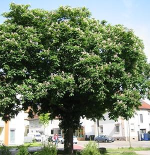

Die Rosskastanie wird 30 Meter hoch.
Ihr Stamm ist sehr kurz.
Er gabelt sich in mehrere kräftige Äste auf.
Die Krone ist im Sommer dicht belaubt.
 Daher ist die Rosskastanie ein guter Schattenbaum.
Daher ist die Rosskastanie ein guter Schattenbaum.
Die Rosskastanie wird 30 Meter hoch. |  Die Krone ist im Sommer dicht belaubt. |